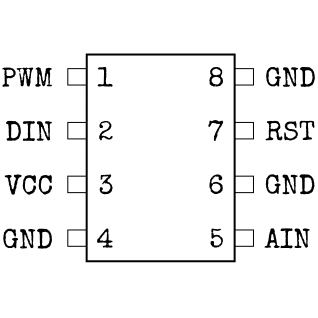
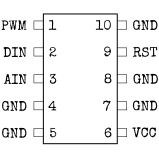
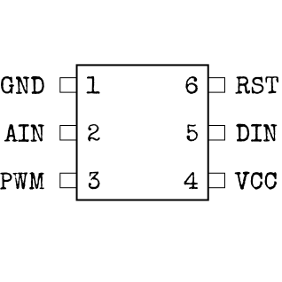

О Микроконтроллере
Это называется «микро»-контроллер, однако эта штука довольно огромна внутри. Возможно потому что может устроить нехилый взрыв...
- Используя тип микроконтроллера и его размер, определите расположение контактов по диаграммам ниже.
- Белая отметка на контроллере обозначает контакт с номером 1. Остальные контакты расположены по возрастанию на стороне с номером 1, а затем идут в обратном порядке на другой стороне.
- По таблице ниже определите верный цветовой код для каждого подсоединённого элемента.
- Для каждого из контактов выберите верный элемент, нажимая кнопки “UP” и “DOWN”, и отправьте ответ с помощью кнопки “OK” (следующий контакт будет выбран автоматически).
Конфигурации контактов
Контроллер ошибок (STRK):


Контроллер светодиодов (LEDS):



Контроллер счётчиков (CNTD):

